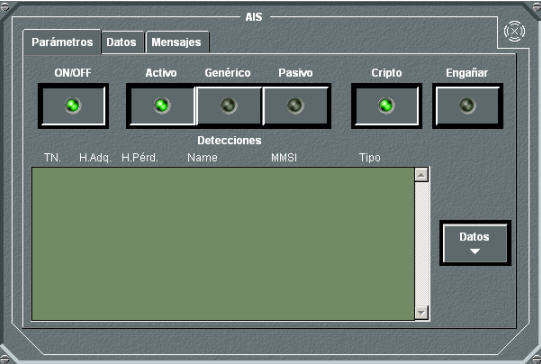
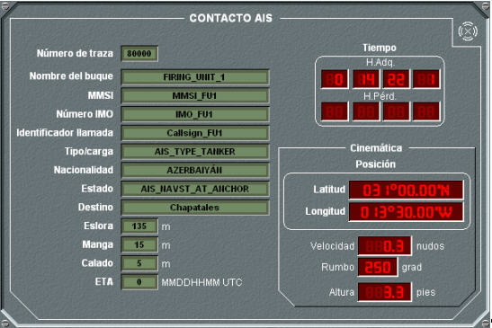
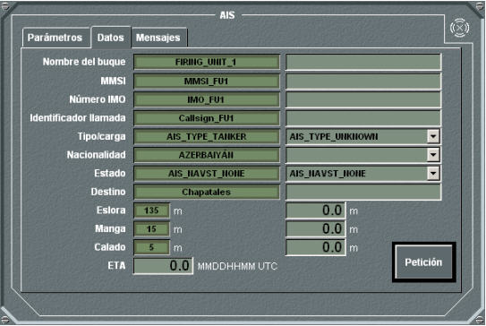
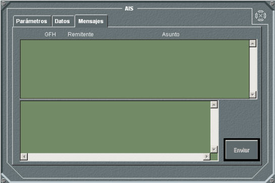

El panel de detalle del AIS dispone de tres solapas Parámetros, Datos y Mensajes.
La solapa Parámetros muestra el siguiente panel:

Desde este panel pueden ejecutarse las siguientes acciones:
- Encender / Apagar el equipo. pulsando el botón ON/OFF. En las unidades submarinas sólo se puede encender el equipo si están en superficie o tienen un mástil izado, con antena para la banda correspondiente.
- Seleccionar el Modo de Funcionamiento del equipo, pulsando los botones Activo, Genérico o Pasivo:
- Activo: En este modo, el buque se incorpora a la red AIS efectuando los ciclos de pregunta y respuesta normales. Recibe la información del resto de buques y transmite la propia, ya sea modificada con propósitos tácticos (si el Engaño está activado), o real. Se podrá activar también la encriptación de la transmisión o no.
- Genérico: En éste modo sólo se transmite el MMSI y el nombre. En el caso de unidades de superficie o submarinas, estos dos datos son los introducidos por el operador para el engaño, en el resto de las unidades se envían los datos reales.
- Pasivo: El buque se incorpora a la red AIS sin ofrecer los datos propios, manteniéndose en postura encubierta. Recibe la información del resto de unidades, pero no transmite información propia.
- Activar la Encriptación de las Transmisiones, pulsando el botón Cripto.
Este botón sólo está disponible para las unidades que tengan los siguientes códigos Stanag :
| 1.1.1.1 |
Combatant |
| 1.1.2.1 |
Submarine |
| 1.1.3.1 |
Air Military |
| 1.1.4 |
Land |
Las transmisiones encriptadas sólo se reciben en las unidades del mismo bando con los citados códigos Stanag.
Las unidades de ambientación no pueden transmitir ni recibir información encriptada.
- Activar el Engaño, pulsando el botón Engañar.
En la parte inferior del panel se muestra la lista de contactos AIS recibidos. Seleccionando uno de ellos y haciendo doble clic o pulsando el botón de Datos situado junto a dicha lista, se muestra un panel con la siguiente información::
- Hora de actualización, para todos los contactos
- Posición, para todos los contactos
- Rumbo, para todos los contactos
- Velocidad, para todos los contactos
- Altitud, para contactos de aviones y helicópteros
- ISMM (MMSI), para todos los contactos
- Número OMI (IMO number), para unidades de superficie y submarinas
- Distintivo de Llamada (Callsign), para todos los contactos
- Nombre, para todos los contactos
- Tipo / Carga, para unidades de superficie y submarinas
- Bandera, para todos los contactos
- Eslora y Manga, para contactos de superficie y submarinas
- Calado, para contactos de superficie y submarinas
- Estado (Navigational Status), para contactos de superficie y submarinas
- Destino, para contactos de superficie y submarinas
- ETA, para contactos de superficie y submarinas

La solapa Datos, sólo está activa para unidades de superficie y submarinas, y muestra el siguiente panel:

Este panel muestra, en la columna de la izquierda, los datos reales de la unidad. Estos datos no son modificables, excepto el campo ETA en el que el operador puede introducir el tiempo estimado de llegada.
La columna de la derecha contiene los datos que se envían cuando se activa el engaño. Estos datos si son modificables, el operador puede introducir valores en cada uno de los campos y pulsar el botón Petición para que sean aceptados por el sistema.
La solapa Mensajes muestra un panel a través del cual el operador puede enviar mensajes de texto libre y consultar los recibidos de otras unidades.

Si el equipo está dañado, no se podrá realizar ninguna operación sobre él.